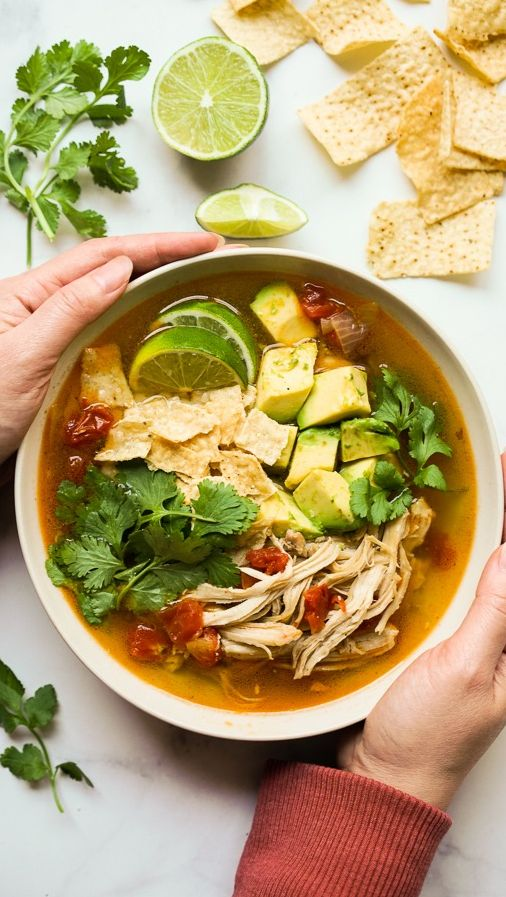
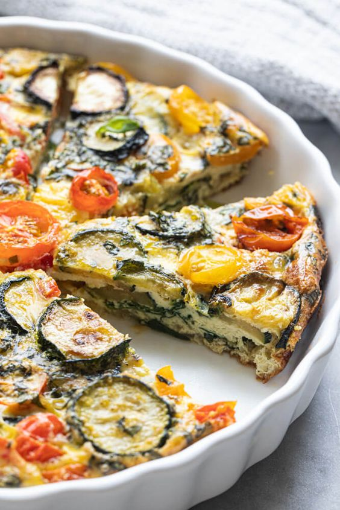
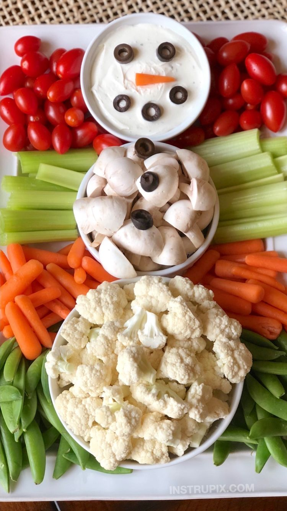
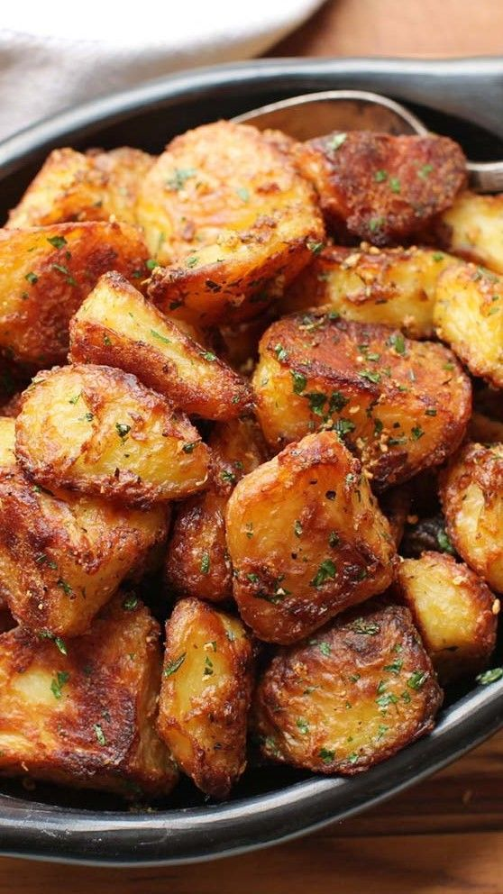
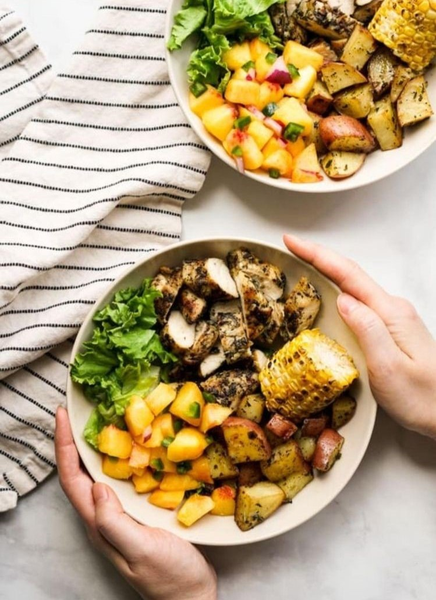

Sebze; gerek vücudumuzun çeşitli ihtiyaçlarını karşılamak, gerekse sağlığımızı birtakım bozukluklardan korumak bakımından en önemli besinlerimizden biridir. Ayrıca, yeryüzünde çeşit çeşit, bol miktarda bulunması da sebzeleri en başta gelen yiyecekler durumuna getirmiştir. İlk insanlar karınlarını doyurmak için bir yandan avcılık yaparken bir yandan da doğada rastladıkları bazı otları, kökleri, çiçekleri yiyecek olarak kullanırlardı. Bunlardan bazılarını, hele doyurucu olanlarını, lezzeti güzel olanlarını dağlara kadar çıkıp toplamak külfetinden kurtulmak için oturdukları yerlerin yakınında ekip yetiştirmeyi düşündüler, böylece ilk sebzecilik, dolayısıyla tarım başlamış oldu. Sebzeler denince tabiatta bulunan bazı bitkilerin değişik yerlerinin besin olarak kullanılan kısımlarını anlıyoruz. Mesela ıspanak, marul, salatanın yapraklarından; kereviz, patates, havucun köklerinden, karnabaharın çiçeğinden, fasulyenin de tanesinden faydalanırız. Bugün besinlerimizin hemen yarısı sebze yemekleridir. Hatta hayvani besinlerin insan vücuduna zararlı olduğuna inanan bazı kimseler yalnız sebze yerler. Bu sebze yiyenler “vejeteryanlar”, daha doğrusu “etyemezler” etteki proteinleri kuru sebzelerden aldıklarını ileri sürerler.